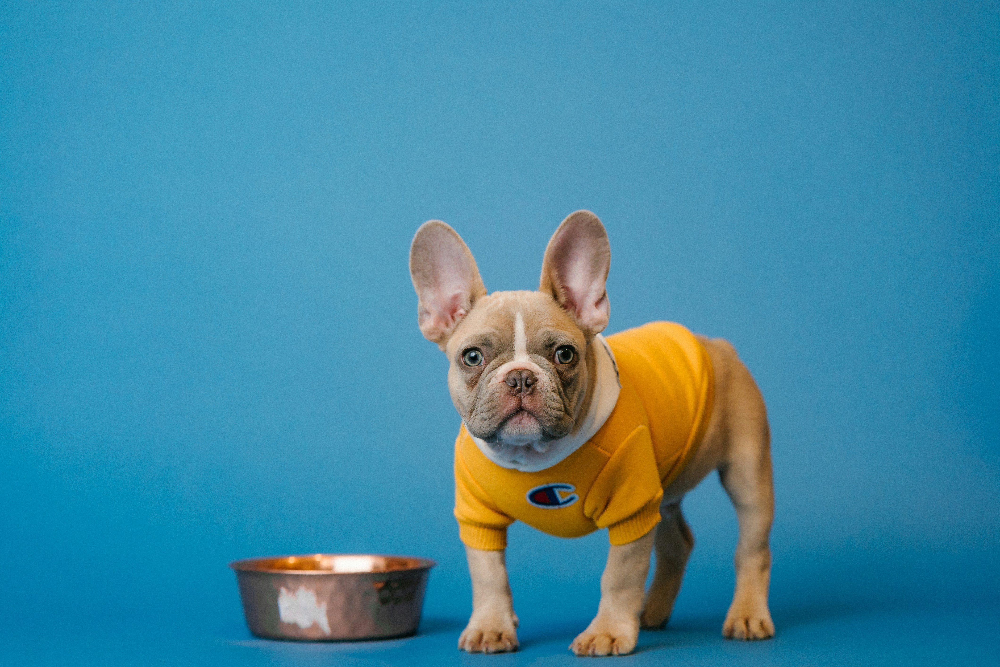

¿Por qué mi perro no quiere comer el pienso? 7 causas y soluciones
Tu perro se acerca al comedero, lo huele y se va. O directamente ni lo mira. No siempre es una señal de alarma — pero tampoco debes ignorarlo. Aquí están las 7 causas más frecuentes y qué hacer en cada caso.
Actualizado: abril 2026·8 min de lectura·AlimentaciónCon señales de alarma

La falta de apetito en perros es uno de los motivos de consulta veterinaria más frecuentes en España. Y también uno de los que más angustia genera en los dueños — porque cuando un ser que siempre come con entusiasmo de repente rechaza el plato, algo parece estar mal.
La realidad es que las causas van desde algo tan simple como el aburrimiento con el pienso hasta problemas de salud que requieren atención veterinaria urgente. La clave está en saber leer las señales y actuar en consecuencia.
⏱️
Regla general: un perro adulto sano puede pasar 24-48 horas sin comer sin que sea urgente. En cachorros y perros mayores de 10 años, más de 12 horas sin comer ya merece una llamada al veterinario. Si la inapetencia se acompaña de vómitos, diarrea, letargia o temblores, ve al veterinario ese mismo día.
Las 7 causas más frecuentes — y cómo identificarlas
01
Se ha aburrido del pienso
Es, con diferencia, la causa más frecuente en perros sanos. Imagina comer exactamente lo mismo cada día durante años — acabarías rechazándolo también. Los perros tienen sentido del olfato 100.000 veces más potente que el nuestro: cuando un pienso pierde frescura o su olor deja de ser atractivo, simplemente lo ignoran. También ocurre cuando llevan demasiado tiempo con la misma marca.
Solución: cambia el pienso gradualmente mezclando el nuevo con el antiguo durante 7-10 días. También puedes añadir un poco de caldo de pollo sin sal, comida húmeda de calidad o aceite de salmón para hacer el pienso más apetecible. Consulta nuestra comparativa de piensos para perro adulto si buscas una alternativa.
02
El pienso está en mal estado
Los piensos secos contienen grasas que se oxidan con el tiempo y el calor. Un saco abierto más de 6 semanas, guardado en un sitio húmedo o expuesto al sol puede enranciarse — y aunque tú no notes nada, tu perro lo percibe perfectamente. Los comederos sucios con restos de comidas anteriores también generan rechazo.
Solución: guarda siempre el pienso en un recipiente hermético, en lugar fresco y seco. Limpia el comedero a diario. Compra sacos de tamaño proporcional al consumo — no sacos gigantes si tardas más de un mes en consumirlos.
03
Estrés o cambio en su entorno
Los perros son muy sensibles a los cambios: una mudanza, la llegada de un bebé o una mascota nueva, un viaje, la ausencia de algún miembro de la familia, ruidos fuertes en casa o incluso cambiar el comedero de sitio pueden provocar inapetencia temporal. El estrés activa el sistema nervioso simpático y literalmente apaga el apetito.
Solución: identifica si ha habido algún cambio reciente. Mantén horarios fijos de comida y tranquilidad en el momento de comer. Si el estrés es severo o crónico, consulta con un etólogo o veterinario especialista en comportamiento.
04
Ha aprendido que si espera, consigue algo mejor
Este es el error más común de los dueños: cuando el perro rechaza el pienso y le das jamón, pollo o comida húmeda "para que coma algo", le estás enseñando exactamente que rechazar el pienso tiene recompensa. En pocas semanas tienes un perro que sistemáticamente ignora el pienso esperando el premio.
Solución: pon el comedero 20-30 minutos, retíralo sin drama y sin alternativas. No cedas. En 2-3 días la mayoría de perros vuelven a comer — el hambre es el mejor condimento. Es incómodo, pero es la única forma de revertir este hábito.
05
Vacunación o medicación reciente
Es completamente normal que un perro pierda el apetito durante 24-48 horas después de una vacuna o al empezar un nuevo medicamento. Las vacunas activan el sistema inmune y pueden causar ligero malestar, fiebre baja o cansancio. Algunos antiparasitarios internos también pueden provocar inapetencia temporal.
Solución: espera 24-48 horas. Si pasado ese tiempo sigue sin comer o aparecen otros síntomas, llama a tu veterinario. No es urgente salvo que el perro esté muy decaído o tenga reacciones alérgicas visibles.
06
Dolor — dental, articular o interno
Un perro con dolor en la boca (enfermedad dental, fractura de diente, infección de encías) encuentra que mascar croquetas es doloroso y las evita. El dolor articular o muscular severo también puede quitar el apetito. Y el dolor abdominal — por gas, inflamación, obstrucción o úlcera — es una causa frecuente de inapetencia que no siempre tiene síntomas evidentes.
⚠️ Ir al veterinario si la inapetencia lleva más de 48h, si el perro tiene mal aliento intenso, si babea más de lo normal o si parece incómodo al comer o sentarse.
07
Enfermedad sistémica
La inapetencia es uno de los primeros síntomas de múltiples enfermedades: infecciones, parásitos internos, problemas renales o hepáticos, pancreatitis, diabetes, hipotiroidismo, tumores... En perros mayores, la pérdida de apetito repentina sin causa aparente es especialmente significativa y debe investigarse.
⚠️ Ve al veterinario si la inapetencia dura más de 2 días en adultos (12h en cachorros o seniors), si se acompaña de vómitos, diarrea, letargia, pérdida de peso, sed excesiva o cualquier otro síntoma.
Señales de alarma: cuándo ir al veterinario sin esperar
🚨
Ve al veterinario ese mismo día si: la inapetencia se acompaña de vómitos repetidos, diarrea con sangre, abdomen hinchado o duro, temblores, dificultad para respirar, pérdida de consciencia o tu perro está completamente apático y no reacciona.
Llama al veterinario en 24-48h si: lleva más de dos días sin comer nada, ha perdido peso visible, bebe mucha más agua de lo normal o tiene mal aliento intenso de aparición repentina.
7 trucos prácticos para que vuelva a comer
Si has descartado causas médicas, estos trucos funcionan en la mayoría de casos de inapetencia leve o conductual:
🌡️
Calienta ligeramente la comida
30 segundos en el microondas intensifica el olor del pienso y lo hace mucho más apetecible. Comprueba que no quema antes de dárselo.
💧
Añade caldo de pollo sin sal
Un chorrito de caldo casero sin cebolla ni sal sobre el pienso transforma completamente su atractivo olfativo. Rápido, barato y muy efectivo.
🐟
Aceite de salmón
Unas gotas sobre el pienso añaden olor y sabor que muy pocos perros rechazan. Además es rico en omega-3. Disponible en cualquier tienda de mascotas.
⏰
Horarios fijos y plato retirado
Pon el comedero siempre a la misma hora y retíralo a los 20-30 minutos. No dejes comida disponible todo el día — el hambre regulada es el mejor estímulo.
🧩
Usa un comedero puzzle
Convertir la comida en un juego activa el instinto de búsqueda y hace que el pienso sea más interesante. Especialmente útil para perros que se aburren fácilmente.
🏃
Ejercicio antes de comer
Un paseo activo de 30 minutos antes de la comida activa el metabolismo y aumenta el apetito. Nunca al revés — ejercicio intenso justo después de comer puede causar torsión gástrica.
🥣
Mezcla húmedo y seco
Una pequeña cantidad de comida húmeda de calidad mezclada con el pienso seco mejora enormemente el atractivo sin cambiar completamente la dieta.
🧼
Limpia el comedero a diario
Los restos de comida y la grasa rancia del comedero pueden generar rechazo. Lávalo con agua y jabón todos los días — es el truco más simple y más olvidado.
¿Es momento de cambiar de pienso?
Si tu perro lleva semanas o meses rechazando el pienso y has descartado causas médicas, probablemente necesita un cambio. No todos los piensos son iguales — la digestibilidad, el porcentaje de proteína animal y la frescura de los ingredientes determinan mucho si un perro lo acepta con entusiasmo o no.
Los piensos de baja calidad con mucho cereal, subproductos y aromas artificiales pueden funcionar durante un tiempo, pero muchos perros acaban rechazándolos. Un pienso con proteína animal como primer ingrediente, sin colorantes ni aromas artificiales, suele tener mucha mejor aceptación a largo plazo.
Si sospechas que la inapetencia tiene que ver con una alergia o intolerancia alimentaria — piel con picor, digestión irregular, diarreas frecuentes — puede que necesites un pienso hipoalergénico o con proteína única. En ese caso, la guía sobre salud digestiva y antiparasitarios puede ayudarte a descartar otras causas.
Preguntas frecuentes
Un perro adulto sano puede pasar hasta 3-5 días sin comer sin consecuencias graves, aunque a partir de las 48 horas ya debes consultar al veterinario para descartar causas médicas. Los cachorros y perros mayores son mucho más vulnerables — si llevan más de 12-24 horas sin comer, llama a tu veterinario. Sin agua, cualquier perro puede estar en peligro en pocas horas.
Depende del contexto. Si lo haces puntualmente para estimular el apetito en un perro enfermo o convaleciente, no hay problema. Si lo haces de forma habitual porque el perro rechaza el pienso seco, estás reforzando el comportamiento selectivo y en pocas semanas solo querrá la comida húmeda. La solución correcta es encontrar un pienso que le guste de verdad o cambiar gradualmente a una dieta con mayor porcentaje de húmedo desde el principio.
Es el caso clásico del perro que ha aprendido que si espera, consigue algo mejor. Si come golosinas con entusiasmo pero rechaza el pienso, la causa es conductual, no médica. La solución es eliminar completamente las golosinas fuera de las comidas, ofrecer el pienso en horario fijo y retirarlo a los 20-30 minutos sin alternativas. En 2-4 días el hambre se impone en la mayoría de casos.
Siempre de forma gradual durante 7-10 días: los primeros 2-3 días mezcla un 25% del nuevo pienso con 75% del antiguo, los días 4-5 al 50/50, los días 6-7 al 75% nuevo y 25% antiguo, y a partir del día 8 solo el nuevo. Un cambio brusco puede causar diarrea y vómitos incluso en perros sin problemas digestivos, porque la flora intestinal necesita adaptarse.
Es bastante común y suele tener una explicación sencilla: por la mañana el perro acaba de despertarse y muchos tienen el estómago vacío desde hace horas, lo que paradójicamente puede causar náuseas leves por bilis acumulada. Adelantar ligeramente la cena o dar un pequeño tentempié antes de dormir suele resolver el problema. Si el perro vomita bilis amarilla por las mañanas, consulta con tu veterinario.
En resumen: el árbol de decisión
¿Lleva menos de 48h sin comer y está activo? Probablemente sea aburrimiento, estrés puntual o capricho aprendido. Prueba los trucos de esta guía y observa.
¿Lleva más de 48h o tiene otros síntomas? Ve al veterinario para descartar causas médicas antes de hacer cualquier cambio de dieta.
Si la causa es el pienso en sí, consulta nuestra comparativa de piensos para perro adulto — un cambio a un pienso de mayor calidad resuelve la inapetencia crónica en la mayoría de casos.